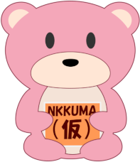

えぬっくま
メニュー
写真をKIFに
大会・教室
ブログ
About

えぬっくま
盤で指した将棋を、あとに残る棋譜にするアプリとサイトを作っています
コマドリ
盤の横に置くだけで、1 局まるごと棋譜にするアプリ
📷
写真から局面を KIF に
盤の写真 1 枚の局面を、ぴよ将棋や KENTO へ
📝
紙の棋譜を KIF に
試験版
記録用紙や棋譜ノートを撮って KIF に
🎥
動画まるごと棋譜化
終了予定
対局の動画から棋譜に。PC アプリが出たら終わります
🧭
検討室
β
棋譜を貼ると、形勢と次の一手が見られる
🏆
大会・教室の方へ
大会や教室の対局を、まとめて棋譜に
📰
ブログ
撮り方のコツや、大会のレポート
えぬっくまについて
使い方ガイド
お問い合わせ